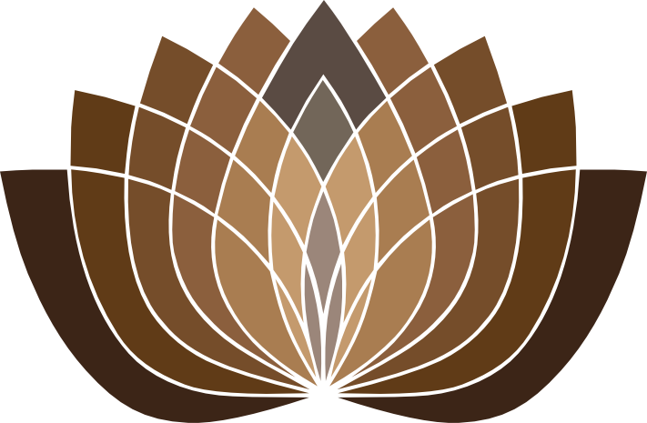

A journey toward
inner peace
Residential Retreat · Rideekanda Forest Monastery
A sanctuary of stillness within an ancient forest, Matale, Sri Lanka
The Residential Retreat
Welcome to a sanctuary of tranquillity nestled within a lush, ancient forest in the heart of Sri Lanka — a place to disconnect from the distractions of everyday life and immerse yourself in the transformative power of nature and meditation.
Our core focus
Residential retreats form the foundation of the meditation training at Rideekanda Forest Monastery. We accommodate both male and female practitioners — including Buddhist monks and nuns — in a supportive environment designed for deep practice.
Our programmes help practitioners develop mental clarity and cultivate an unshakeable mind: the essential qualities for managing emotional stress and discovering lasting inner peace through self-awareness.
Training methodology
Our approach centres on the systematic teaching of the Tipiṭaka, combined with analytical study of Dhamma and discipline, and personalised meditation instruction.
Experienced meditation masters guide and support participants throughout their journey, offering one-to-one sessions to address individual needs and questions — ensuring each practitioner receives the guidance necessary to deepen and refine their practice.
Life at the Retreat
Simple, comfortable, and arranged with care — every part of daily life here is designed to support mindfulness, community, and a genuine depth of practice.
Accommodations & facilities
Simple yet comfortable spaces with minimalist décor that keeps the atmosphere calm and conducive to meditation and reflection.
- Private single rooms — for those seeking solitude
- Private double rooms — for those comfortable sharing
- Shared dormitories — with individual beds
The dining experience
Wholesome, nourishing vegetarian meals are prepared with locally-sourced ingredients by the monastery's cooks — thoughtfully designed to support your meditation, nourish the body, and uplift the spirit.
Meals are shared in the communal dining hall. A full breakfast and lunch are provided, with a light evening meal of soup or porridge available.
The 7-Day Residential Retreat
A progressive
journey to insight
Concentration & Vipassanā Meditation
What is the
purpose of life?
This transformative seven-day programme offers a structured path to genuine inner peace through the time-tested practices of the Sri Lankan Forest Tradition, as taught at Rideekanda Forest Monastery.
It addresses a question that arises in every human heart. Through systematic training you move beyond the endless pursuit of temporary satisfactions — what the Buddha compared to a thirsty traveller chasing mirages in the desert — and discover the lasting peace that comes from seeing reality as it truly is.
What you will learn
The programme follows a progressive methodology, unfolding in three movements that build one upon the next.
Concentration
Begin by developing deep concentration (samādhi) through breath meditation (Ānāpānasati) — calming the restless mind and exploring the jhāna states the Buddha himself used as the foundation for his awakening.
Body contemplation
Learn to perceive the body not as a solid, permanent entity but as a dynamic interplay of fundamental energies, constantly arising and passing away — loosening the misconceptions of permanence, pleasure, and selfhood.
Vipassanā insight
Develop the wisdom of rising and falling (udayabbaya-ñāṇa) through walking meditation and specialised breathing — perceiving directly the impermanence (anicca), unsatisfactoriness (dukkha), and non-self (anattā) of all things.
Who Should Attend
This retreat welcomes sincere seekers at every level — from complete beginners to experienced practitioners deepening their understanding under traditional guidance. The only requirements are patience, dedication, and a willingness to investigate the nature of your own mind.
A wisdom, not a religion
Buddhism is a wisdom to be experienced for yourself, through the method the historical Buddha discovered 2,500 years ago. The Buddha was a human being — extraordinarily wise, but no god. To pay respect to him is simply to credit him with his discovery, as we would any teacher. For this reason these techniques are open to people of all world views.
The promise of practice
The path to ultimate happiness is not a distant goal but a present possibility. Each moment of clear awareness, each recognition of arising and passing, brings you closer to the unshakeable peace beyond all conditioned things — not merely intellectual understanding, but lived wisdom that transforms your whole relationship with experience.
A Day at the Retreat
The daily rhythm
A balanced day weaves together morning and evening Dhamma sessions, guided periods for independent practice, and traditional monastic ritual — evening chanting and Dhamma talks among them. This routine may vary with the nature of each programme.
Waking up & getting ready
Breakfast
Morning Dhamma session
Learning session
Meditation practice
Lunch
Afternoon rest
Meditation practice
Evening Dhamma session
Learning session
Chanting session
& evening Dhamma discussion
Meditation practice
Night rest
Offered as Dāna —
freely given.
The teachings offered at Rideekanda Forest Monastery are given on a Dāna (donation) basis, honouring a tradition that has sustained Buddhist wisdom for over 2,500 years. When you offer Dāna to your teacher, you join an unbroken chain of generosity stretching back to the time of the Buddha himself.
Your contribution supports not only the teacher who guides you, but the monks he is training to become future teachers, the teachers who trained him, and the monastics who serve the surrounding village communities. In this way, each act of giving ripples outward through time and space.
Unlike institutions that collect obligatory tithes, the Buddhist monastic tradition has always depended entirely upon the freely-given donations of those who value its teachings. This mutual support between monastics and lay practitioners lies at the very heart of how the Dhamma has flourished across centuries and continents.
Those who gave generously in the past made it possible for you to receive these teachings today; through your own generosity, you enable the monks to continue sharing this path with future generations.
Food & accommodation
To cover the essential costs of food, water, electricity, and accommodation in this remote forest setting, we kindly ask participants to contribute toward their food and lodging.
If cost is a barrier
The teachings should be accessible to all sincere seekers. If cost presents a barrier to your attendance, please do not hesitate to reach out — we will work together to find a way for you to join us.
Reserve your place
in the forest
We primarily offer a seven-day residential programme on concentration and Vipassanā meditation, held on pre-scheduled dates each month, with short-term retreats on selected dates. Spaces are limited, so we encourage you to book well in advance.